chasing little pasts
2018
Culture City of East Asia 2018 Kanazawa "Altering Home", 21st Century Museum of Contemporary Art, Kanazawa JAPAN
Mixed media: Discarded objects and waste materials collected from the streets, field recordings collected in the city, incandescent bulb, sound system, light controller
sound composition by Tatsumi Ryusu
"CHASING LITTLE PASTS" is a site-specific sound installation created by Uozumi Atelier using discarded objects found on the streets, combined with field recordings made at each location. Broken home appliances, furniture, and worn-out tools collected locally become the material for the work. Multiple speakers are installed throughout the space, emitting sounds characteristic of the site from various directions. These sounds synchronize with lighting bulbs that flicker in unison, creating an environment where light and sound merge as one. The installation reconstructs fragmented stories told by objects and sounds in a non-linear, non-contextual way. Visitors encounter new, unresolved narratives and sense diverse memories that transcend boundaries of time, place, and nationality. What appears to be a random assemblage of stories reflects the ambiguity of our memories and history, as if measuring and recording the world with an arbitrary, nonsensical ruler. Ultimately, this work invites the audience to immerse themselves in the indescribable stories hidden within everyday life.
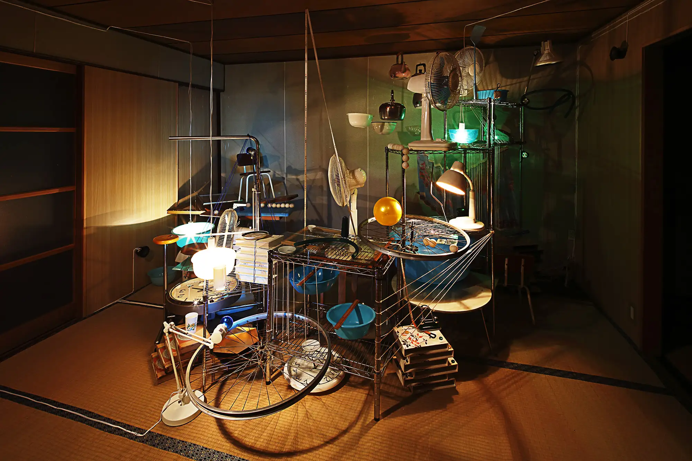
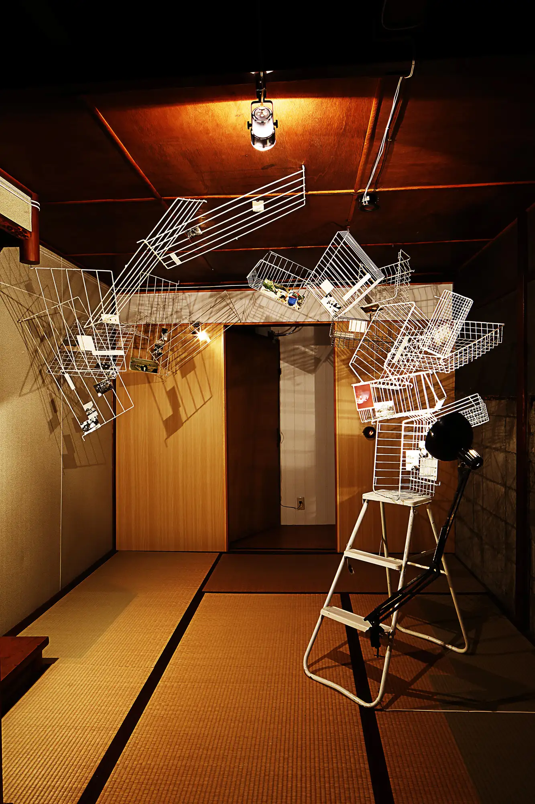
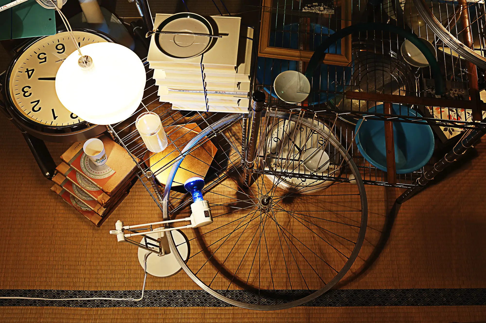
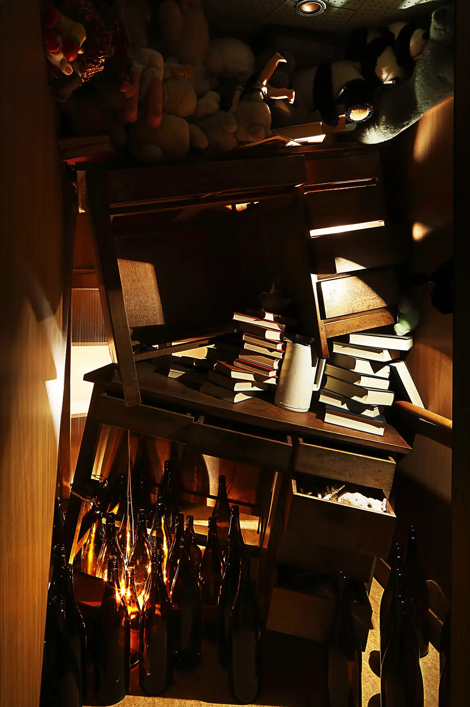
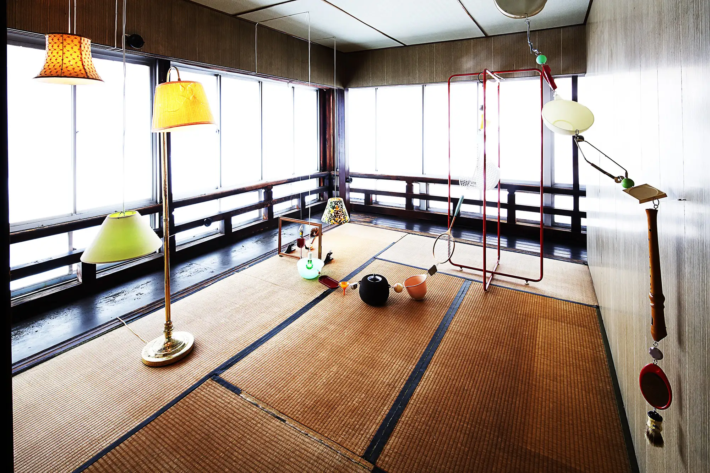
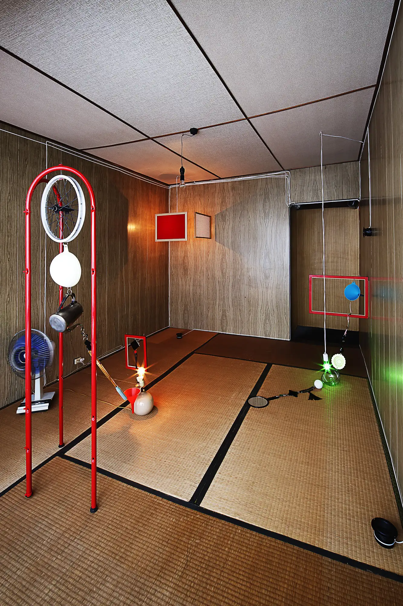
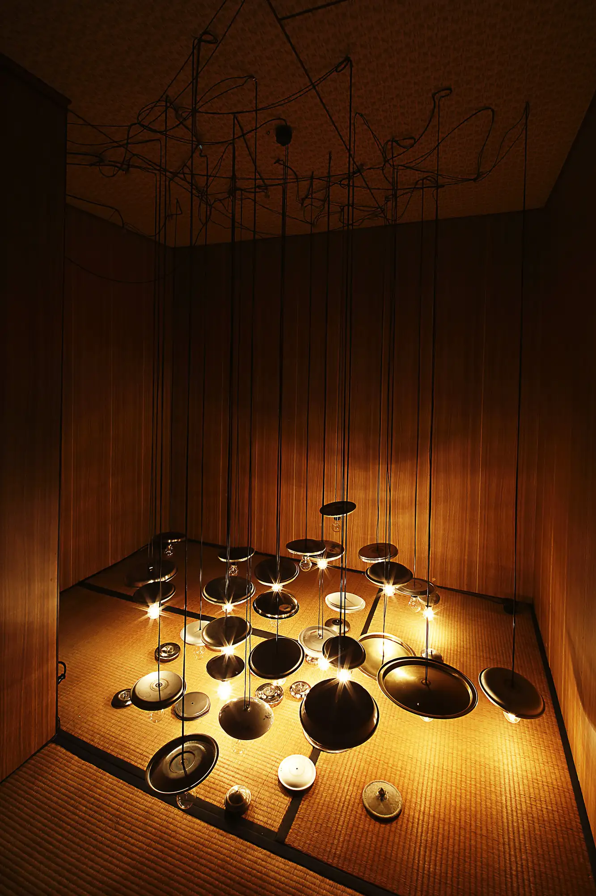
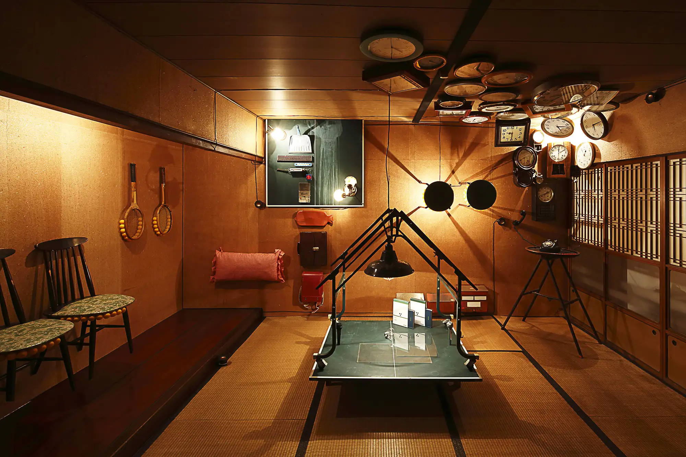
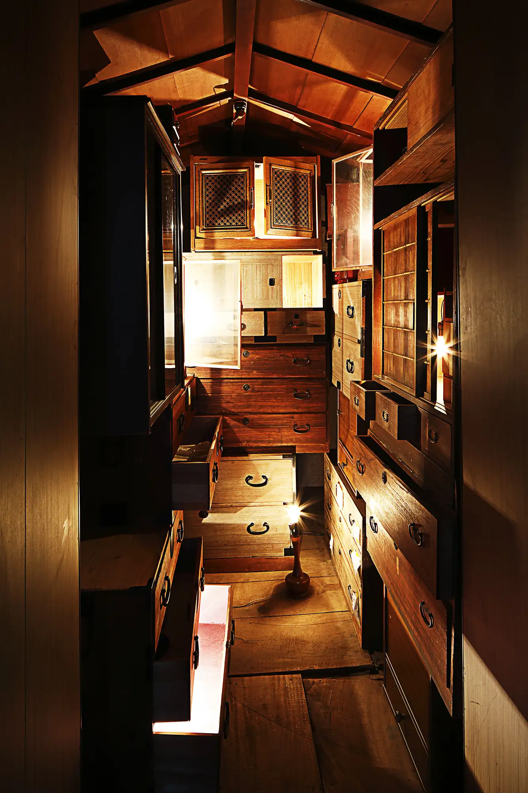
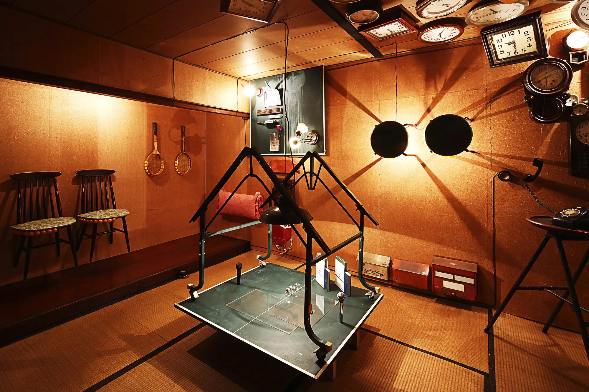
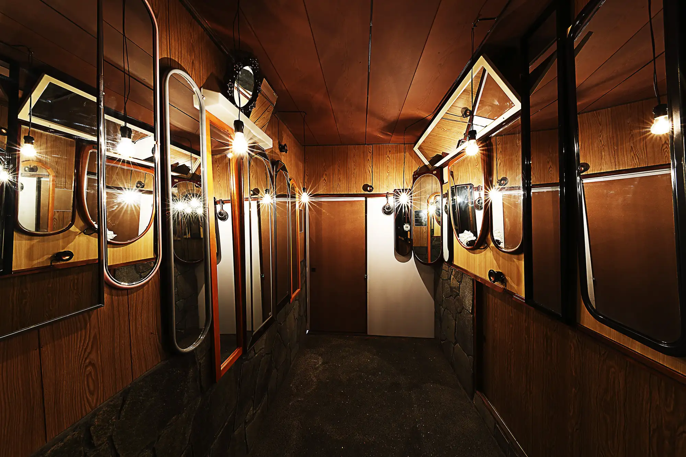